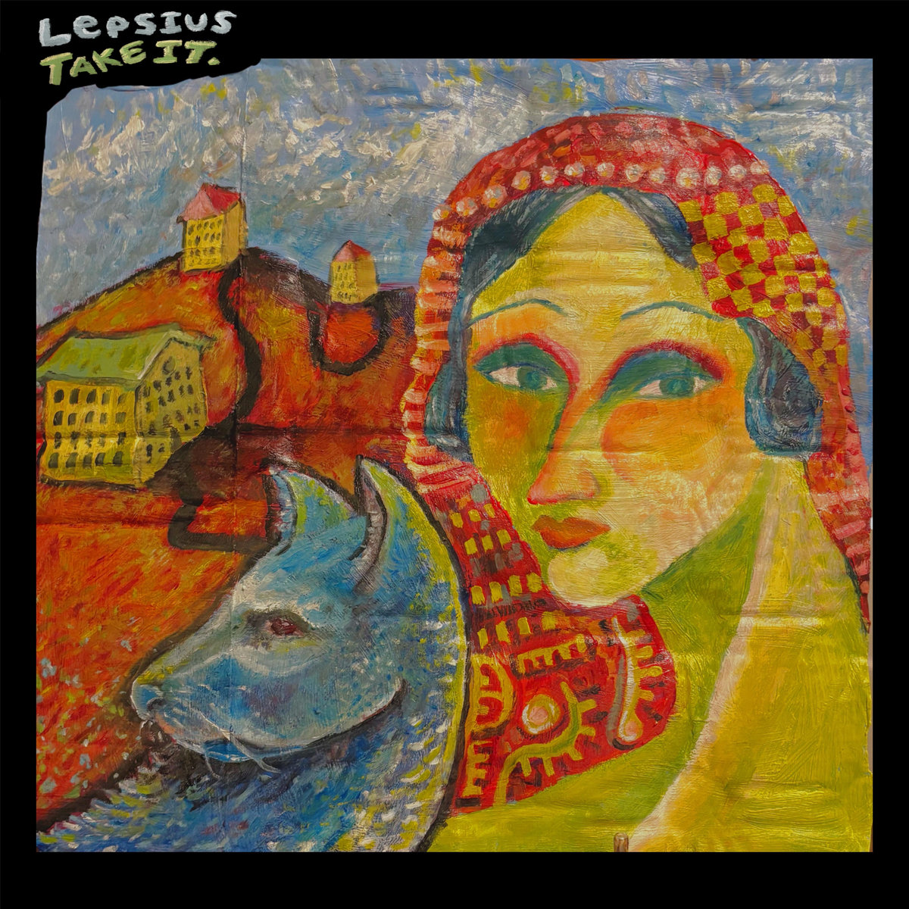

01.12.25
Phoebe Johnson - Songwriting, Vocals, Bass
Wren Kennison - Co-writer, Guitar & Drum, Postprod.
Jackson Steffens - Recording Engineer
Our first actual release!
We wrote all of these songs in about a week while rehearsing for the december Obliques show.
Recorded in an afternoon at Jackson's house on a little 2-track recorder.
Playing without a drummer was very strange, but very fun. It also made editing these much, much, easier.
Opinion Piece by W.K.:
I'm not a fan of how this turned out. My guitar parts are horrifically unprepared, and there's barely any bass in
recording. That's literal- the bass frequencies are just gone.
[no shade to jackson, of course]
It's a shame because I think these are some of the best songs Phoebe's written. I geniunely think stickers is a top 10 ever-written song.
Thus, Take It DX.